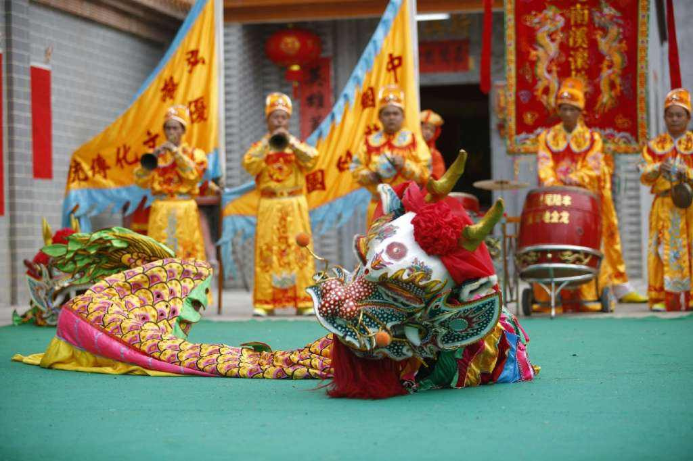

简介
汕尾是闽南文化、潮汕文化、客家文化、广府文化交汇地，有正字戏、西秦戏、白字戏等3大稀有剧种，拥有9项国家级、28项省级非物质文化遗产。
民俗文化
-

- 陆丰皮影戏
- 历史渊源
- 陆丰皮影戏历史悠久，形成于宋代，盛行于明、清，普及于民国时期。陆丰皮影戏是中国三大皮影系统之一潮州皮影的惟一遗存。
- 文化特征
- 中国皮影素有北路、南路之分，陆丰皮影戏是南路影戏唯一仅存的一支，是中国三大皮影系统之一的潮州影的唯一遗存。 它是一种集绘画、雕刻、制作、音乐、表演、舞合技艺于一体的专业艺术。
-
- 碣石鲤鱼灯
- 历史渊源
- 碣石“五岳朝天”是当时驻守在碣石卫城的军人传人的，后逐渐融入当地民间，被民间赋予神的色彩，并代代传承，形成独具地方特色的民间传统舞蹈。 历史悠久，对碣石卫的人文发展历史有重要的研究价值。
- 文化特征
- 碣石五岳朝天舞（鲤鱼灯）是由五条鳄鱼和一只背负如意护卫方玉印的麒麟组成的一个灯舞队伍。 因“岳”与“鳄”同音，故用五条鳄鱼来代表泰山、恒山、嵩山、华山、衡山五岳。麒麟代表天，从而演化出了“五岳朝天”的典故。
-

- 汕尾滚地金龙
- 历史渊源
- 根据广东省汕尾市大安镇南溪村老人黄天枢藏书中的记载和部分知情者的叙述，“滚地金龙”始创于南宋， 明嘉靖年间，黄氏光昭公一支从福建漳州移居广东陆丰大安镇南溪村，带来《滚地金龙演史传》的传本
- 文化特征
- 南溪村“滚地金龙”表演时，由二人钻入“龙身被套”，一人舞龙头，一人舞龙尾。整个表演过程分为“开场见礼”、“打围巡洞”、“游潭戏水”、“抻筋洗鳞”、“伏蛰闻雷”、“迎雷起舞”、“驾云飞腾”、“收场还礼”八个舞段，表演中模仿的龙旋舞飞腾、戏水嬉耍、沉思奋醒、柔静盘曲、勇猛奋进等动作。 伴奏用威武雄壮、嘹亮开阔的海陆丰正字戏的“牌子大锣鼓”，大唢呐按不同的表演情节吹奏不同的曲调，有《宫娥怨》、《哭皇天》、《山坡羊》、《八板头》等曲牌。